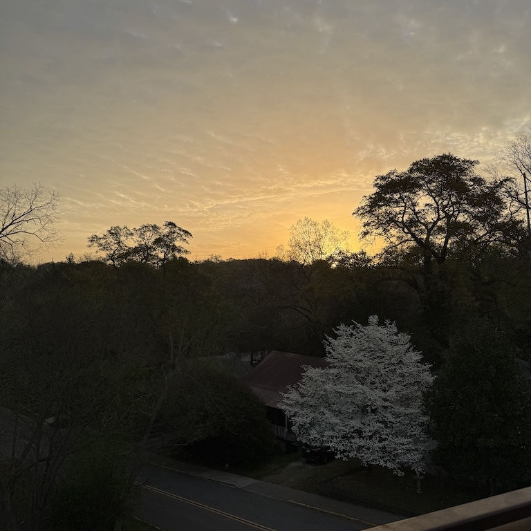
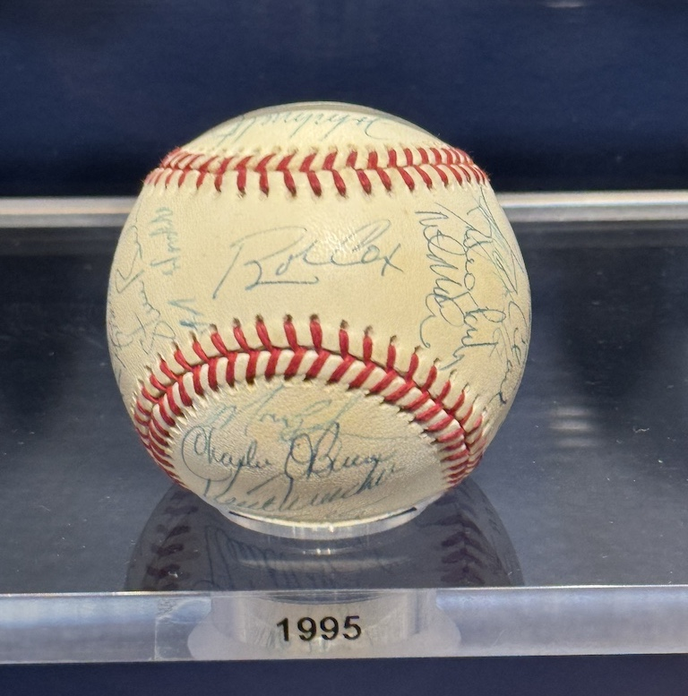
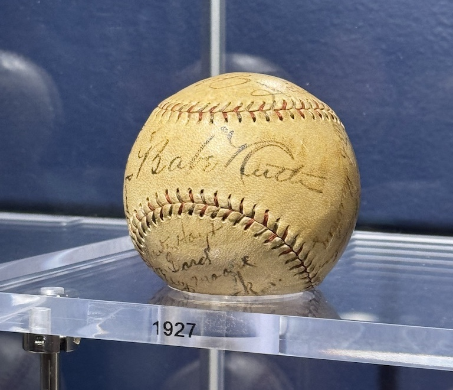
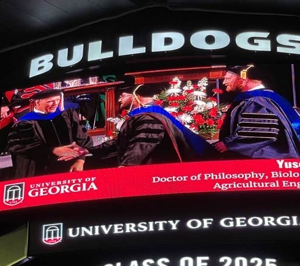
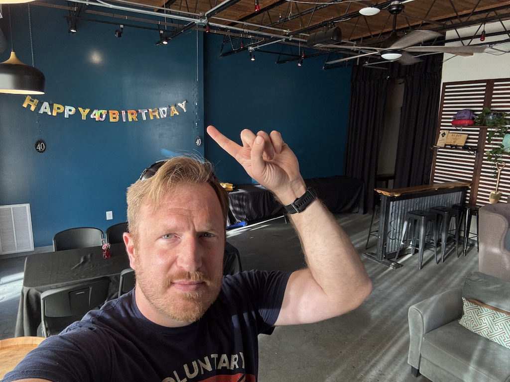
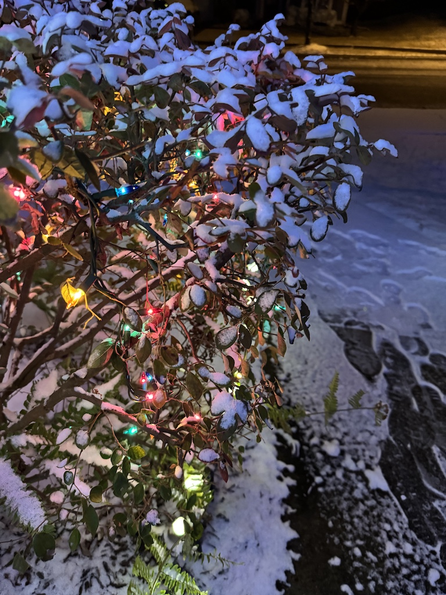
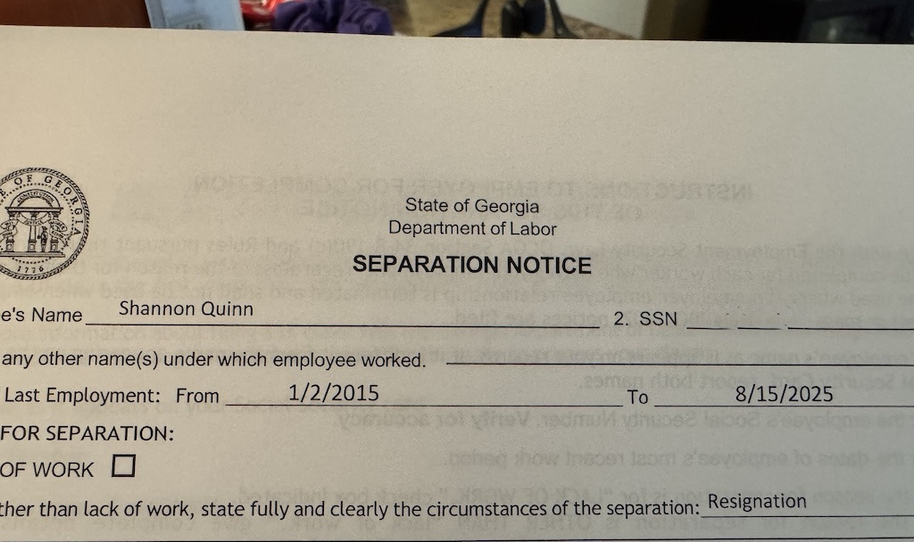
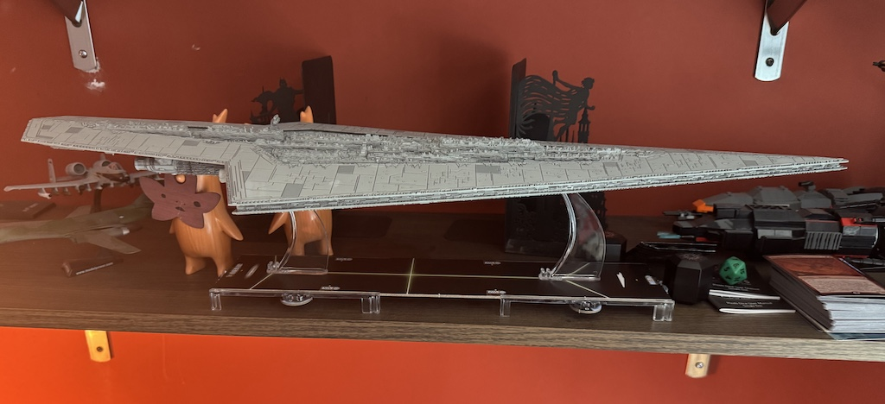

I’m on track this calendar to read only a single Brandon Sanderson book—Secret Project 5, aka Isles of the Emberdark (and it was wonderful)—but with everything that has been going on this year, some of my favorite quotes, motifs, and character arcs from his books have been sticking in my neurons.
“Journey before destination” is certainly the biggest one, and not only because it’s the one I’ve said—many years before I’d even heard of Sanderson—should be my epitaph: holy geez it’s hard for me.
Ever’day I’m changin’
I’ll be honest: I’ve wanted to write this blog post for weeks but just couldn’t find a way to dislodge it from my skull. I’ve made the announcements, emptied the offices, boarded the ons, and bluntly have just been trying to keep putting one foot in front of the other while moving at about a thousand miles per hour.
Then NPR posted this gem: “7 signs it’s time to quit.” (it’s a great read, and I’d highly recommend it regardless of your career circumstances)
Being a month removed from a full career pivot is an interesting perspective. Suffice to say, I felt intimately familiar with each of the seven signs.
- Yep, been thinking of quitting since late 2020.
- Yep, definitely wasn’t what I wanted, even though it theoretically was. And maybe, at one time, truly was.
- Oh, any number of reasons here. Relevant info: I’m a recovering people-pleaser! Not hard to concoct reasons to stick around.
- YUUUUUP.
- Chances of success were always tiny. Felt like I’d won the lottery several times in a row up until that point; how much longer could that luck hold, really?
- This was much more subtle than the others, but it was there, especially from my wonderful wife.
- More than I was willing to pay, I’d realized.
And while it took most of the next 5 years to make the change happen, it’s not like I fell into business-as-usual for that whole interval. Progress isn’t linear and sometimes involves backtracking.
But good luck convincing my head the truth of that for ME. Because at times I felt as though I actually was just settling into the status quo. Objectively, career changes involve a lot of hurry-up-and-wait1, which my brain just refuses to accept.
The waiting part was hard enough: waiting for relevant job postings, waiting for a response to applications, waiting for interview schedules, waiting for feedback on the interview. And then came the changes.
“Well folks, we’re being diverted to Alabama”2
For some reason, I decided four plane trips in eight weeks was a good plan.
For a little context, this easily surpasses my personal records for both total flight count within a single year AND flight frequency since the pandemic, and it also rivals some of my busiest years as a graduate student (when we traveled to 3-4 out of town half and full marathons, visited both our families over holidays, and took our own trips sans kids; not to mention conferences).
There was SciPy 2025 in early July, which was fantastic as always. It was my first SciPy since they moved from their previous Austin, TX location to the current Tacoma, WA spot.
Then there was a 1-week family vacation to Colorado. Ostensibly, the purpose of the trip was to attend the wedding of one of my wife’s cousins, and that indeed was a beautiful and joyous event. But we also took a few extra days to stick around and be tourists, see the sights, hike, and even swim. A heat wave in the second half of the trip put a damper on things, but we otherwise enjoyed getting out to the mountains.
Following that, in mid-August I took a trip to Boston for an off-site / on-site work event at my new gig’s HQ. That’s right: I got to meet folks at my new job in-person! The first day was a series of icebreakers followed by some pretty in-depth discussion of goals and strategy for the Engineering team. The second day was an actual on-site visit to the headquarters building, where we participated in “Science Day”, which entailed an informal hackathon as well as presentations by some folks on what they’ve been working on. Frankly, an incredible few days.


And over Labor Day weekend, my family and I journeyed to Ohio to visit my wife’s family. It was a blast, but it was wall-to-wall activities. I recall telling my wife at the Cleveland Air Show, as the F-15 was coming around to buzz us a second time: “I’m enjoying this! But if it was up to me I’d be home right now.”
Flipping the table, setting it on fire, and blowing it up
We may have bitten off more than we could chew from globetrotting alone. Other major life events made sure we paid dearly for our decisions.
In May, I attended what will very likely be my last UGA graduation to hood my final graduating doctoral student. It was definitely bittersweet… but honestly, I was mostly proud of my students, and thrilled that it really could be my final graduation ceremony.

In March, I turned 40. Like a dad at the playground who just turned 40 the day before Z’s birthday said to me: “My brain thinks I’m 25, but my body thinks I’m 55.” Can’t bend down and pick something my kiddo has dropped without making all the appropriate over-30 noises.

In January, we got the first decent snowfall in Athens that we’ve had in since we moved here, and first snow of any kind in Athens since 2021. It was beautiful; Z loved playing in it, and it even canceled a few days of school. And a few days of daycare. So I now really understand how my parents must have felt on the occasional snow day when I was a kid.

Let’s see, what else… oh! I officially began my new job at Valo on July 16, and my last official day at UGA was August 15. And Z left daycare and started public pre-K at the start of August.3

Permanent impermenance
So far, 2025 has been a visceral lesson on the impermanence of life. It’s something I conceptually understood, and often associated it negatively (ie death). But this year has given me a taste of its positive side. It’s a theme that has also come up in speaking with my therapist lately: that even bad situations are temporary. Life is a series of seasons, and if I’m frustrated with where I am now, I can probably do at least a little something to change it.
Like the final slide of the NPR comic: if nothing else, you can allow yourself to daydream of something better.
It’s somehow already mid-September and, while travel and major life transitions should be in the rearview mirror for at least a few months4, I’m still finding it difficult to catch my breath. A big part of that is simply: jfc, I’m trying to find what our new daily equilibrium even is! I’m a creature of habit, and I feel like I really nailed 2024. But the playing field has changed dramatically since then and I’m still recalibrating.
I love my new job (even though I feel about 10 slippery steps behind on everything): the work is exciting, the schedule is sustainable, and the people are just. lovely. I went on a 5-mile run with my direct supervisor during the Boston on-site. I’m sure there’s a rose-tinted sheen over everything right now, but even watching other folks interact—in the Slack, at the office—I’m humbled by how compassion and empathy underlie it all. They care about the work, sure, but they care even more about the people.
I also… don’t really miss UGA? I’ve visited campus a few times lately, both since submitting my letter of resignation in mid-June, and even since my employment officially ended August 15. There are parts of it I miss: the sense of physical community, some really awesome folks, working with my Dad. But I kept expecting I’d be bowled over at some point with mourning, and it just hasn’t happened. It still could! And even if it doesn’t, those parts I mentioned will probably pop up in waves from time to time.
But every day at this new job has been replete with parallel experiences: where something that, for the past 10 years, had always gone one particular way, instead went this other awesome way. And it’s just… normal. It’s not special, not exceptional, not a one-off; it’s just how this company does business.
Mindblowing. Sometimes, the grass really is greener.
I’m sure this new job will have its grinds. I’m sure, even once I find my footing with these new routines, stuff will hit the fan. And I’m sure that when that happens, I’ll fail miserably to embrace the journey and instead just wish it away. But like my recently-5yo5 daughter has taken to saying lately: “We’ll do our best.”

Footnotes
Much like air travel, which I’ll get to.↩︎
Yes this actually happened: on a flight home to ATL, already delayed 2+ hours on the tarmac in Colorado due to lightning, was then diverted to Birmingham because of lightning over Atlanta. I think we got home at 2am?↩︎
I don’t know whether it’d have been more painful to have spaced these transitions out, but I can definitely say having them hit at once was also painful.↩︎
A tentative trip over the holidays in December is the only thing on the horizon.↩︎
As an “elder millennial” whose brain is still jammed somewhere in the middle of 2020… HOW 5YO 😭↩︎
Citation
@online{quinn2025,
author = {Quinn, Shannon},
title = {“{We’ll} Do Our Best.”},
date = {2025-09-12},
url = {https://magsol.github.io/2025-09-12-well-do-our-best},
langid = {en}
}